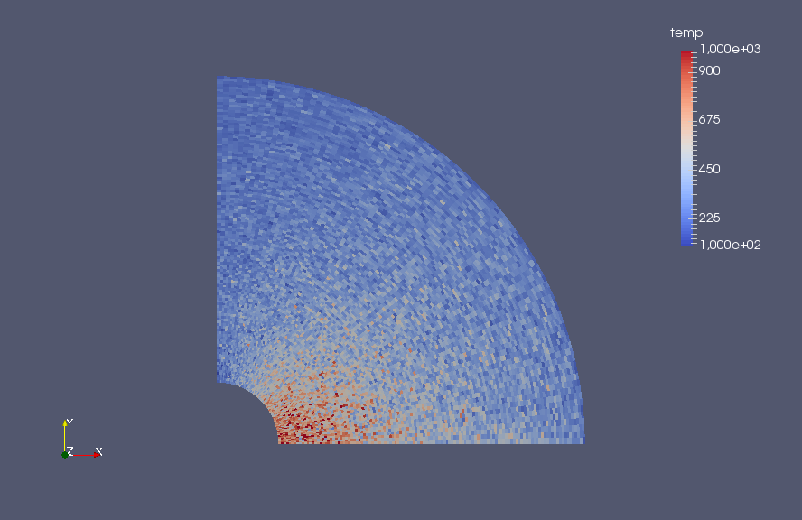

Résultats
Rentrée atmosphérique d'un objet en raréfié
Résultats
Présentation des résultats obtenus
Validations
Test sur le déplacement
Tout d'abord, afin de valider le début de nos codes, un test sans la prise en compte des rebonds et des collisions a été réalisé. De plus la vitesse d'entrée a été définie uniformément dans la direction de l'axe des x uniquement. Le résultat estompé est donc un domaine avec une densité homogène partout correspondant à la densité définie en entrée. Ce test fut réalisé sur un maillage grossier afin d'économiser du temps de calcul.
Le résultat est présenté ci-dessous, comme on peut le voir la densité est effectivement quasi homogène sur l'ensemble du domaine. La fonction de déplacement est donc validée.
Test sur les rebonds
Par la suite, la fonction sur les rebonds sur la condition de symétrie et sur la condition "wall" a été intégrée au code. Afin de tester celui-ci, il a été décider d'injecter seulement un seul "inflow" de particules avec seulement une particule par maille sur un maillage grossier. Cela va permettre de suivre les trajectoires et les rebonds des particules facilement. Il ne faut pas payer attention aux valeurs de densité obtenues.
Le résultat est présenté sous forme d'une vidéo dans laquelle on observe assez facilement les rebonds des particules. Ce test a été réalisé avec les rebonds selon la maxwellienne.
Vidéo des rebondsValidation sans les collisions

Afin de valider le modèle sans les collisions, le code a été exécuté sur un maillage plus raffiné et jusqu'à ce que la solution semble stabilisée. Les résultats sont présentés sur les figures ci-contre pour la densité, la vitesse et la température.
Pour la densité, on remarque une hausse juste à l'avant de la navette due à l'agglomération de particules. Dans le reste du domaine la densité est globalement uniforme et de même valeur qu'initialement. En ce qui concerne la température, on remarque un fort échauffement à l'avant de la navette, jusqu'à plus de 1000 K, alors que la température à la condition "inflow" est de 200 K.

Pour la vitesse, on peut observer qu'elle est très ralentie, voir quasi nulle, juste devant la navette alors qu'elle semble être plus importante sur le côté de la navette.

Ces résultats sont proches de ceux à quoi on pouvait s'attendre et sont réalistes.
Validation avec les collisions
Avec un maillage identique au précédent, le code a été exécuté en tenant compte des collisions. Afin d'avoir un visuel plus lisse de la solution, un moyennage des différentes propriétés affichées a été réalisé une fois la stabilisation de la solution. Les résultats sont présentés à nouveau sur les figures ci-contre.
Pour la densité, on remarque également une hausse juste à l'avant de la navette due à l'agglomération de particules et une densité homogène ailleurs. La température est proche des 1000 K à l'avant de la navette et proche des 200 K ailleurs. Enfin la vitesse est quasi nulle devant la navette et plus élevée sur le bord de celle-ci. Encore une fois ces résultats semblent physiquement explicables et proche de ce à quoi on pouvait s'attendre. Néanmoins, il aurait fallu comparer les valeurs obtenus avec des valeurs mesurées expérimentalement afin de les valider précisément.